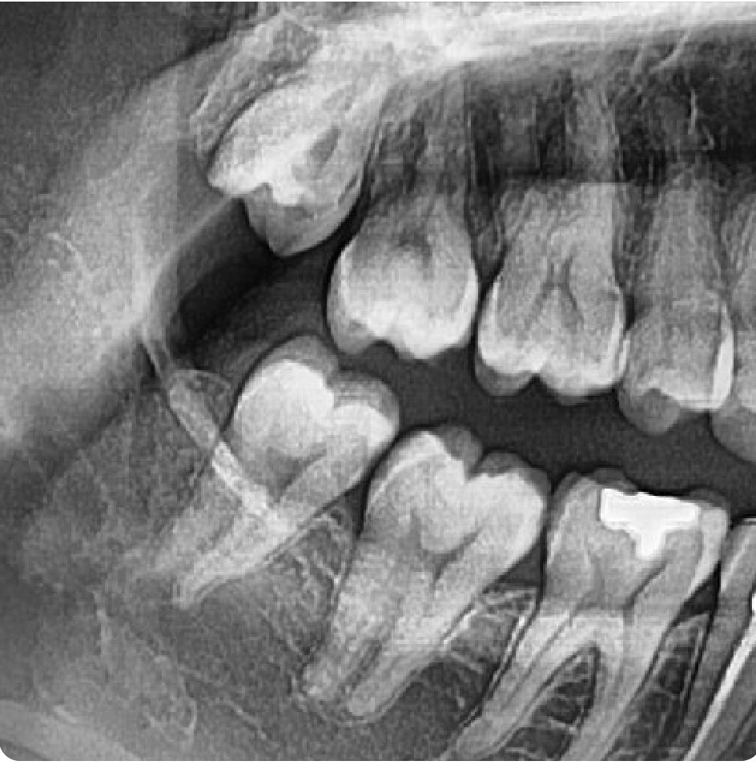

Insight 45 — When the Cause of Pain Is Unclear: The Logic of Treatment by Subtraction
Published:
Last reviewed:
فارسی

Clinical Explanation
Sometimes the right decision does not begin with a definitive diagnosis; it begins by removing something whose retention has no value
- Consider a patient with pain in the lower right second molar. The pain began two days ago, is triggered by cold and heat and lingers, but does not worsen with pressure or chewing. The patient has seen several dentists and received conflicting opinions: one says extract the wisdom tooth, another says leave the wisdom tooth alone and refer the molar for root canal treatment.
- The first step is to read the symptoms themselves. A lingering response to cold and heat, without percussion pain, points to a pulpal origin rather than a periapical one. So far, attention turns toward the pulp of that same molar.
- But one thing remains unresolved: there is no clear cause behind this pain. And when there is no obvious cause, we have no right to treat the diagnosis as definitive. Here, referred pain must stay on the table, because the localization of pulpal pain in molars is notoriously unreliable. The patient may point to the wrong tooth—and even the wrong jaw.
- Now we come to the wisdom tooth. The upper wisdom tooth is out of occlusion, meaning the lower wisdom tooth has no functional antagonist and the strategic value of keeping it is effectively zero. This single point justifies its extraction, without our having to first prove that this tooth is the culprit behind the pain.
- And this is the core of the decision. We do not extract the wisdom tooth because we are certain it is the problem; we extract it because keeping it offers no benefit, and removing it takes a confounding variable out of the entire equation. This is treatment by subtraction: instead of gambling on a causal hypothesis, we shrink the space of possibilities. Moreover, this very tooth might itself be the source of the pain (pericoronitis or referred pain), in which case its extraction is no longer merely removing a confounder—it is the treatment itself.
- What remains is the pulpal question: pulpitis or referred pain. This differential diagnosis is the job of the endodontist, not the prosthodontist. So after the wisdom tooth is extracted, the patient is referred for pulp vitality testing. Handing off what lies outside your domain to the right person is itself part of the right decision.
-
Key takeaway:
When the cause of a pain is unclear, the diagnosis is not definitive and must not be assumed to be. In this situation, instead of gambling on a hypothesis, remove the variable that has no value. A tooth with no functional antagonist is a worthless, removable variable; removing it shrinks the space of possibilities and makes the decision clearer—and if that same tooth was the source of the pain, removing it is the treatment itself. Finally, hand off what lies outside your domain (the pulpal differential and referred pain) to its specialist. The overall logic is simple: remove the worthless, reduce the uncertainty, delegate what is outside your scope.
The content of this page is intended for the educational use of dentists and dental students.